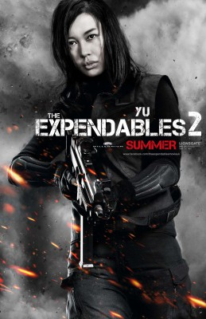

#7105 Die Letzte Schlacht am Tigerberg

 IMDB-Wertung: 6.5 / 10
IMDB-Wertung: 6.5 / 10  Metascore: 0
Metascore: 0 
The Taking of Tiger Mountain von Hark Tsui spielt in den 1940er Jahren und erzählt von einem chinesischen Spion, der eine bis auf die Zähne bewaffnete Gruppe von Kriminellen infiltrieren soll. Den Zuschauer erwarten jede Menge Stunts unter anderem auch im Rahmen einer turbulenten Verfolgungsjagd auf Skiern.
Jahr: 2014
Dauer: 142 Minuten
FSK: 16
Land: China Studio: Koch MediaTonspuren:
Untertitel:
Auflösung: 1080p (1920x1040) Größe: 9410 MB
Genre: Action, Abenteuer, Krieg, Geschichte, Biographie
Regisseur:  Hark Tsui
Hark Tsui
Drehbuch: Bo Qu
Soundtrack:
Darsteller:
 Hanyu Zhang als Yang Zirong
Hanyu Zhang als Yang Zirong Tony Ka Fai Leung als The Hawk
Tony Ka Fai Leung als The Hawk Kenny Lin als 203
Kenny Lin als 203-  Nan Yu als Ma Qinglian
- Liya Tong als Bai Ru
- Geng Han als Jimmy
- Xiao Chen als Gao Bo, Guest star
 Zhong Lü als Grandmother
Zhong Lü als Grandmother- Xing Yu als Bro 2
- Xiaolong Zhang als
- Ran Cai als Soldier
- Sooeung Chae als Ray
- Sihan Cheng als Bro 4
- Junchen Chu als Soldier
- Yiheng Du als Luan Ping
- Lijie Ei als Village Chief
- Kunbing Feng als Soldier
- Liang Feng als Soldier
- Dayong Fu als
- Shang Gao als Soldier
- Xia Gao als
- Yilin Guan als Soldier
- Hongqing Guo als Li Yongqi
- Jingxuan Guo als Soldier
- Yanjie Guo als Soldier
- Yitian Hai als Commissioner Hou
- Qi Huang als Soldier
- Chi Jin als Soldier
- Shaoyuan Jin als Soldier
- Zha Ka als Tank
- Bingyuan Li als Detonator
- Guangxue Li als Soldier
- Siaodong Liu als
- Zhou Ma als Soldier
- Bo Meng als Soldier
- Feng Pan als
- Liang Pan als
- Chen Shu als
- David Song als
- Yiming Su als Shuan Zi
- Jiaolong Sun als Bro 4
- Mo Tse als Mao Baojun
- Ning Wang als Runaway Bandit #2
- Yao Wang als Bro 7
- Zezong Wang als Soldier
- Jia Wei als Lil' Juan
- Di Wu als
- Laosi Wu als
- Xudong Wu als Long Leg
- Yi Xiao als Bro 6
Datei: X:\HD-Eastern-Modern(A-M)\Letzte Schlacht am Tigerberg, Die (2014, FSK16, 1920x1040).mkv seit 26.09.2017
Festplatte: HD Eastern+Western
 Es gibt insgesamt 104 Filme in der Gruppe 'HD-Eastern-Modern(A-M)'
Es gibt insgesamt 104 Filme in der Gruppe 'HD-Eastern-Modern(A-M)'